Meet The Winners Of Mother's 1985 Garden Contest
Profiles and garden layouts of competition winners, including Tre Megown, Merle and Sherry Hill, Norbert and Linda Monohan, David Fisher, Judith Hendrickson, Julia Jannings.
January/February 1986
"The rule of never leaving a spot bare in the garden is strictly applied here!"
Judith Hendriekson
It's our pleasure to introduce you to a group of extraordinary gardeners . . . the cream of our 1985 Garden Contest crop. We simply couldn't pick a top winner from among the five regional finalists, so each will receive a $200 first-place prize, a Ball canner set, and a Weed Eater Model 5000 Power Hoe. And one entrant so deserved special recognition that we create an additional category (and awarded another first-place prize) just for her.
On the following pages of this mini-manual, we've printed excerpts from the contestant, entries (written and submitted early last year, with updates, in most cases, later in the season). You'll meet our winners, take a tour through their gardens, learn their secrets for success . . . and discover (as we have) that their enthusiasm for good gardening is highly contagious. After reading our top winners' stories (which, along with those of our 30 semifinalists, will be featured in more detail in an upcoming special issue; see News from Mother), we can hardly wait for spring to come, so we can get to work on our gardens!
July 23: Frost!" wrote Judith Hendrickson in a note to us on the progress of her garden in Michigan's Upper Peninsula. And fickle weather is but one of the imposing horticultural problem s Judith has faced since she and her family first moved to their homestead-at the time, a rundown cabin on seven overgrown acres. "The field was covered with goldenrod, thistles, black-eyed Susans, burdock, bindweed, and seedling apple trees . . . all pretty and fine in their place, but not in my garden!" she writes. "I placed my children and husband in strategic positions with numerous buckets of water and torched the matted undergrowth. "
Three years, untold hours of digging, and tons of compost later, Judith Hendrickson's large (a total of 3,300 square feet!) garden produces a prodigious quantity of vegetables, flowers, and herbs despite the brief growing season ("90 maybe frost free days"). Succession planting, dense intercropping, and heavy mulching-and a love for her work-are the keys to Judith's success.
The first year, I used a spade and lots of labor (my children's and my own) to dig and turn over a rough 20' X 50' plot. I explained patiently to my mutinous crew that turning small nibbles of ground and chopping them once with the spade made rototilling the soil afterwards a much easier job. We finally got the area tilled by the end of April. I formed it into beds about 3' X 8', forked in composted manure from our barn, and when the ground got warm in May, planted.
Then I turned my attention to a hill (actually, a knoll) by our house. It rises eight feet and stretches 75' X 100' . Behind it was a pile of rocks and boulders. I pointed out to my husband and offspring that, to be usable, the knoll would have to be terraced, and that the stones they were looking at-in suddenly comprehending horror-would make a beautiful, functional dry wall.
At least the job was odorless. Moving a large manure pile to the 10' X 20' plot I dug on the summit was not. But I grew the best corn crop of my gardening career on top of that knoll, a well-manured planting of bicolor Pride and Joy. I also harvested 51 pints' worth of wax beans (mulched with grass clippings) and some Small Sugar pumpkins (mulched heavily with hay and watered every other day with weak manure tea).
Things didn't go as well back in the main field garden, however: The chopped-up sod seemed to monopolize all the soil bacteria. The broccoli refused to head, the peppers didn't set fruit, the potatoes had scab, the let tuce was bitter, and the parsley was stunted. Still, the tomatoes rallied and bore fruit. The chard pulled itself together in August. The celery, planted in the wet lower end of the garden, a.k.a. The Swamp, pushed the weeds aside, beat its skinny chest, and posed for the seed catalogs.
1984: The next spring, I removed the old carpeting I'd put on a large portion of the field the previous summer. Laying scrounged old carpeting on top of the soil is an easy way to kill unwanted vegetation. When I lifted the cover, the earth below was clean and ready to be dug.
I limed the whole garden, field and hill. I dug in manure and bedding. And I planted seedlings started in the house in flats, using varieties chosen for their cold-hardiness and early yield. The strategy worked. Green Comet F1 broccoli set out in late May (and kept under milk-jug hot caps for a couple of weeks) ignored several nights of 20°F temperatures and headed up into big green bouquets by the first weeks of July. The cabbages, Copenhagen Market, became fat as beach balls, and were harvestable just before the first hatch of white cabbage moths.
The spring onions I'd pushed into a bed, with lettuce seed broadcast among them, produced prodigiously for a month-with no thinning, weeding, or cultivation. (I hate thinning anything more than I hate doing dishes.) The carrots, broadcast over an entire 3' X 8' bed, grew well (I usually plant Danvers Half-Long or Sweet 'n' Short), and so did the peas. My four beds of potatoes, planted by dropping whole seed potatoes into trenches that were then covered with soil (and later surrounded by an 8" layer of chicken-litter sawdust), produced over 300 pounds of clean, scab-free spuds, starting in late July. And up on the hill, my tomato plants-Big Boy, Early Girl, Quick Pic, Fantastic, and Heinz-outgrew their warming cradles of tires, spread out, and furnished a feast of fresh fruit for eating and canning.
1985: It's late February as I write this, and we're just now out of vegetables frozen from last year's garden-but there's still lots of canned produce, and a few pumpkins. This year I think I'll finally be able to grow every vegetable we need for the whole year.
It's my conviction that no one can garden; a plot successfully until a few years' result are studied and the information applied. For example, the design of my garden has developed not only as my needs have evolved, hi; as I've become more familiar with the differ r ent soil conditions on our property, which range from dry to almost swamplike. I've learned how to use different sections for different crops.
Experimenting with many varieties hay helped me determine which ones are best for my soil, miniclimate, and techniques. I'll al ways try new varieties, but now I have a long list of tried-and-true favorites, too: Spartan Early broccoli, Orbit onions, Utah celery Tendercrop beans, Mary Washington asparagus, Glacier tomatoes, Konserva kale, Burbank and Idaho potatoes, King of the North grapes, and two types of alpine strawberries Alexandria and Pineapple Crush.
Also, my garden can be bigger this year I cause I've learned methods that allow me handle a much larger plot than most. I hardly ever dig anymore. To make a new garden bed, I build a compost pile, cover it with top soil once it's cooked down some, and then plant on top! I also use heavy mulch on most all my garden. In the spring, I just lay: the old pathway mulch up onto the beds, and other rotted bedding if needed. Then I open holes for my transplants and poke them in! I do turn and clear the soil for any broadcrops, and I start my tomatoes and corn in open soil because the exposed ground warms up faster.
This year my plans are more ambitious than ever. True, I'm in for a lot of work. But then again, how many people can say the have a job they love better than anything else?
P.S. August 1985: I'm busy harvesting now. Three beds of potatoes have already been dug up. . . the Blue Max savoy cabbages are coming in tonight for freezing . . . and I've bent the tops down on the Orbit and Copra onions (most of which are as big as softball, when our August monsoons stop, I'll pull the onions up and braid them together to cure). Overall, the best crop so far has been broccoli (Spartan Early made much tighter & ters than Bravo).
I'm picking our big, mature tomatoes green. It's slug season, and those slimy villains truly do love tomatoes. We so seldom have tomatoes ripe on the vine up here. I'm used to ripening my canners on the loft floor. Still, the heirloom Swedish variety I've been trying this year is ripening on the vine, and it tastes better than either Pixie or Siberia.
I tried a lot more succession sowings and interplanting this year. The rule of never leaving a spot bare in the garden is strictly applied here! A good combination in one bed was Bloomsdale Long-Standing spinach with Tyee and Kujo bunching onion sets. As the spinach was harvested, I set tomato plants in the center of the bed.
The fall peas and spinach are doing well. Still haven't had any ripe corn, but should have some in two weeks if the frost holds off that long. All in all, it's been a very good year!
"I do quite a bit of experimenting with hydroponics, electrogardening, lunar planting, and more."
David Fisher
"When I taught ice skating," says David Fisher, "I often told my pupils that you can't win the skating prize in your first year of competition. The same is true of gardening. You can't just rent a tiller, set your seeds in the ground, and expect a triumph. It takes three or four years to get your system down. You have to experiment to learn what works best in your area. "
In David's case, the area is a backyard in the middle of a large Georgia city-not the kind of place you'd ordinarily expect to find an organic oasis. But then, Mr. Fisher is not your ordinary kind of gardener.
My garden measures roughly 20' X 25' and is located on a 30° incline behind my urban Georgia house. I've terraced this area to make five raised garden beds with full southern exposure. My objectives are to create a low-maintenance food production system, to eliminate having to mow any grass, and to provide my downtown home with a "country feeling." I'm doing pretty good so far. In fact, I've been growing so much food in my little garden that I've had to buy a freezer!
My main strategy is to use dense sequential plantings in rich organic soil. Once a year, usually in December or January, I till the beds and then add a six-inch layer of organic mulch to prevent soil compaction and weed growth.
I use a carefully worked out succession of plantings. My summer production includes tomatoes, peppers, squash, beans, and corn. Some fall crops are lettuce, tomatoes, spinach, carrots, and kale. Winter gardening provides fresh kale and (grown hydroponically indoors) lettuce, basil, parsley, and oregano. By February, I'm eating fall-planted carrots, winter radishes, sweet peas, and snow peas. My spring plantings include spinach, asparagus, chard, snow peas, lettuce, shallots, and Egyptian onions.
The biggest problems I've had have involved watering. The weather is so erratic here that I can't rely on rainfall alone to provide for my crops. It may rain every day for two weeks and then not once for three. That, and the heat, can stress plants so much that they never recover.
But if I water my plot a little every day, the plants don't experience that stressful up 4 and down cycle, and they do much better. In f the past, I've relied mostly on canvas soaker a hose that I run along each terrace; I just let m the beds soak for about an hour each evening in dry weather. But since canvas eventually d rots, I'm considering switching to a more du table plastic soaker hose offered by Gardener's Supply Company (133 Elm St., Winooski, VT 05404).
This summer I also cut the bottoms off a lot of large plastic soda bottles and buried the containers partway in the ground near my plants, to serve as slow waterers. It takes me about 30 minutes to an hour to fill all of them in the evening.
I do quite a bit of experimenting, too-with hydroponics, electrogardening, lunar planting, and more. Like most people, I used to think such ideas (particularly the latter two!) were wacky. But I got turned around when I read the article, "Photovoltaic Root Stimulation" in MOTHER N0. 85. [EDITOR'S NOTE: That piece discussed experiments which involved using small solar cells-available from Silicon Sensors, Inc., Dept. TMEN, Hwy. 18 East, Dodgeville, W153533-to promote plant growth.] That got me to thinking, and I sent off for two of the Sun Stik PV stimulators. When they arrived I stuck them in the soil of two tomato and geranium containers, which I set out in my garden along with some other pots. That summer was really hot, and most of my contained plants just about died, but the ones with Sun Stiks did fine!
That convinced me that what I call electrogardening-inducing electric/gravitational fields with conductive metal-really works. So now I put copper wire, metal tomato cages, Sun Stiks, and even aluminum foil in one of my beds each summer. My crops there do seem to be healthier and to produce bigger yields.
I've also been pleased with the results of my hydroponic gardening. I bought two hydroponic sets from the Light Machine-a company that, unfortunately, is no longer in business. Each one consists of a halogen arc lamp, eight 12" X 12" containers, an electric water pump, and connector tubing. I put my plants in a sterile medium (lava rock or pea gravel works best) and use Dr. Chatlelier's liquid fertilizer (3451 63rd Ave. North, Pinellas Park, FL 33565) to supply-nutrients.
With my hydroponic setup, I've grown winter basil, oregano, and parsley indoorsall of which I've been able to sell to gourmet shops and restaurants. (I've made enough money from my year-round herb growingindoors and out-to pay for all my garden supplies and to provide a slight cash surplus.)
Then I went the next step and started growing plants hydroponically outdoors. The method is ideal for gardening in the Southyou can provide all the water your plants need and don't have to worry about weeds or soil diseases. I've grown banana plants, geraniums, herbs, and even corn with outdoor hydroponics.
And now I'm beginning to explore lunar influences on plantings. I hope to follow many of the guidelines in Llewellyn's 1986 Moon Sign Book (Llewellyn's Publishing, P.O. Box 64383-86MSB, St. Paul, MN 55164) in next year's garden.
Actually, I experiment with many things. I place praying mantis egg cases (that I get from Mays Brothers and Mellingers) in the garden. One year, I introduced ladybugs to control aphids, but later decided that Safer's Insecticidal Soap was cheaper and more practical. I also use Nitron enzymatic soil conditioner (Nitron Ind., Inc., Agri-Zyme, P.O. Box 43, Larned, KS 57550). I've found that, like spraying foliage with magnesium and putting matches in the ground with pepper transplants, it does promote plant growth.
I read many seed catalogs and try a wide range of varieties. One of my favorite companies right now is Sandwich Island Seed Co. (Postal Drawer 630, Kailua, Oahu, HI 96736). They have tomato and lettuce varieties that are supposed to thrive in 90-100°F weather!
I guess one of the reasons I like to garden so much is that plants are so, well, honest. In my work life, I'm constantly meeting people who are trying to be something they aren't, who are full of lies. Plants aren't like that. Tomatoes don't try to be peppers.
Plants do what they're supposed to do. Even more than that, they try to show you their good side. Plants sort of sit there and ask you to care for them.
If you do, they respond-every time.
1 PRIVACY VEGETATION
2 PRIVACY VEGETATION
3 ASPARAGUS
4 MONDO GRASS AND HOSTA SPECIES
5 SHADED SEEDBED (PERLITE IN ALUMINUM GUTTER)
6 PARK'S WHOPPER TOMATOES AND DWARF GERMAN
TOMATOES
7 PARK'S HIGH PERFORMANCE PEPPERS
8 BLACKBERRIES
9 PARK'S HIGH PERFORMANCE PEPPERS
10 ANGORA TOMATOES
11 LETTUCE AND CHARD
INTERPLANTED
12 STRAWBERRIES
13 CUCUMBERS
14 LARGE GREEN AND BOUQUET BASIL
15 SHIITAKE SPAWN
16 TRIPLE CURLED AND ITALIAN PARSLEY
17 RASPBERRIES
18 SQUASH
19 LAVENDAR
20 BEANS
21 BASIL
22 SWEET BANANA PEPPERS AND
PIMIENTO PEPPERS
23 TRIPLE CROP TOMATOES
24 SCALLIONS
25 EGYPTIAN ONIONS
26 YELLOW BELL PEPPERS
27 STADDONS PEPPERS
28 CELEBRITY HYBRID TOMATOES
29 TERRONI TOMATOES
30 GIANT BELGIAN TOMATOES
31 METAL WIRING FOR
ELECT ROGARDENING
32 FIG
33 FIG
34 FIG
35 HYDROPONIC CORN
36 HYDROPONIC CORN
"We had so many slugs, the chickens ate until they could hardly walk."
Merle and Sherry Hill
Merle and Sherry Hill live on two-thirds of an acre in western Washington. "We're blessed with tall evergreens, wild huckleberries and blackberries, considerable wildlife, and a view of Puget Sound, " they write. "We're bordered on the north by trees and a hayfield . . . on the south by a county road . . . and on the west by a neighbor who considers our chickens a health hazard and our garden radical. "
Well, the Hills' garden (shown on page 66) is different-because it has to be. Consisting of 34 permanent raised beds ("and still counting!") surrounded by wide, absorptive sawdust-mulch pathways, it produces an abundance of vegetables in a damp location that lesser souls might consider simply ungardenable. If you're ever confronted with "impossible" conditions in your own garden, think of Merle and Sherry Hill. Where there's a gardener with a will, there's a way.
Both of us have been gardening for 15 years now. When we moved here five years ago, our lot was mostly a weed patch overrun with brambles and tree seedlings. We feel we've come a long way in turning our backyard into what, for us, is an almost perfect garden.
Our soil is gummy, nonporous blue clay . . . and to make matters worse, all the neighboring properties drain onto ours (a culvert runs under the road from our place and channels all the water into the bay). We had to dig drainage ditches around our property just to divert the runoff: And that still didn't make our soil suitable for growing vegetables.
So last year we built a series of permanent raised beds, using salvaged and garage-sale lumber to make boxlike enclosures. We placed the boxes in our (by then cleared) backyard, positioning each one wherever we thought it would do best. Then we added purchased topsoil (a sandy loam) to each enclosure, and mixed in compost as fast as our chickens could produce the makings.
We built the beds using whatever size lumber we had on hand, so they range from 2' X 2' to 5' X 10'. We use narrow 2' X 5' and 2' X 6' beds for peas, and the small 2' X 2' beds for other vine crops-this allows the vines to spill over the boxes and creep along our sawdustmulched pathways, while the a plants themselves are firmly rooted in soil and ox get plenty of nutrients. The garden faces W south, so most of the beds get lots of sun, and the ones that are shaded can be used for lettuce, broccoli, and other tolerant plants.
Last year's garden produced much more than we expected (including 170 pounds of tomatoes from a 5' X 10' bed!). With the help of cold frames, we were even able to have a winter garden that provided us with fresh lettuce throughout the season. And we're expecting an even better yield from our garden this year.
We've been focusing on getting the most from our space without giving up the large sawdust walkways that make using the wheelbarrow and working around the beds so easy. Whenever we find an unoccupied nook or cranny, we add a bed. Our garden last year totaled 720 square feet (remember, that's pure garden, and doesn't include pathways). So far this year we have 970 square feet. With our numerous beds we're able to work out a good rotation schedule, which helps to keep pests and diseases at bay. And it's an easy matter to adjust the soil in any given bed to suit the pH and nutrient requirements of the crop to be planted.
Our chickens and dogs are an integral part of our garden, too. The dogs keep out raccoons (bad pests in our area) and warn us of crows, birds, rabbits, etc. The chickens, on the other hand, are our composters; they process weeds, seeds, bugs, and plant waste better than any shredder or compost pile! And, they eat slugs (also a bad problem around here). Last May, after six inches of rain, we had so many slugs that the chickens ate until they could hardly walk . . . their beaks actually started sticking together! We had to burn the slugs after that.
We're avid practitioners of succession planting. Our philosophy is to fill in any space vacated by a plant with something else, until it becomes too late in the summer. And we're also strong believers in maintaining records of each year's garden. The notes we've kept over the past five years have served as tools for producing better, more productive gardens each succeeding year. This season, for example, we're putting in several small succession plantings of lettuce instead of the single large one that produced so much all at once last year. Our records show that we ran short of peas and beans last year, so we've planted more this year. We needed less Swiss chard, more potatoes and corn . . . it's all there in our records.
Our next goal is to develop the east side of our property. Fruit trees, blueberries, and additional beds will go there among the evergreens. The extra vegetation will give us more privacy as well as more food. P.S. September 1985: Yields so far have been better and earlier than ever! We attribute the improvement to our chicken manure compost, the early start our new greenhouse gave us, the raised beds, an unusually mild and beautiful spring, and the TLC we've given our garden.
Below are some sample figures detailing 1984's and 1985's harvests.
"Gardening can be hard work sometimes, but I don'tcomplain or even want to, because I love every minute of it."
Tre Megown
"I really like this one!" wrote Eco-Village gardener Susan Glaese in her comments on Tre Megown's garden. "It's the special, personal touches that make a garden unique, and Tre's garden has those qualities. She gets a lot out of a little space, and uses records to weed out poor performers and assess new varieties. This is definitely one of my favorites!"
Tre lives with her husband, Wade, and two children, Jessica (6) and Hannah (3-1/2), in a small town of about 900 people ("Actually, there are close to 2,000 if you count the whole township," she points out quickly). Simplicity, efficient use of space, and high productivity characterize her attractive garden.
I think everyone should have a garden, no matter how little space or time one has. Even just a couple of tomato plants in a pot can bring big rewards, and would be well worth the effort.
It's important, too, to use whatever space you have wisely. I do most of the work in our 32' X 45' garden and 15' X 45' cornfield, and raise enough vegetables to last my family the whole year-with plenty left over to give to friends. I freeze, can, and dry what we don't eat fresh. We grow strawberries on a 10' X 14' plot, and harvest wild blackberries along the borders of our one acre. We planted plum trees last year and blueberries this year, so we'll soon be enjoying those fruits too. I also like to plant flowers, from which I save the seeds for the following year.
Our garden is located on the richest, sunniest spot on our property. A small underground spring runs along the south border, helping to keep the soil moist. We jokingly call our corn patch "The Lower 40" because the underground spring keeps that area damp all summer!
Early each spring, my husband, Wade, tills the garden, turning under the leaves and composted chicken manure with which we covered the garden the previous fall. Then we dump and spread two tons of horse manure over the surface as mulch and fertilizer. I plant the vegetables in wide double rows, with narrow walk-ways between. By midsummer, the combination of manure mulch and the shade from mature plants leaves little room for weeds to grow.
I start the season by planting onions, Chantenay carrots, leaf lettuce, radishes, snow peas, and sweet peas, plus herbs and flowers. When the weather warms, I put in Swiss chard and the corn. Then I start my first plantings of kidney, wax, and green beans; second and third plantings, added at intervals of about a week, assure a steady crop all summer. Tomatoes (Roma and Beefsteak) are planted next. Roma is a family favorite for making quarts of delicious spaghetti and pizza sauces with fresh oregano and garlic.
I like to include herbs in my garden, not only for the taste they add to our menu, but because they repel many insects. I also plant flowers for their pest-repelling abilities, and to attract bees for pollination. Besides, I like the extra color. The marigolds growing around the garden's borders even seem to do a pretty good job of keeping rabbits away (although this year the cottontails wiped out my third row of kidney beans!).
Once the garden begins to reach its peak, I start to pick and prepare the vegetables for storage. I keep a record book, noting the planting dates, expected days to maturity, and harvest dates and yields for each variety in the garden. I use the book as a reference for the next year's garden. I know which varieties were good producers and which were not, and whether I ended up storing too much or too little of any vegetable.
I also like to try a few new vegetable varieties each year. Favorites are planted again the following year, while varieties we didn't like or that produced poorly are discontinued. (My family didn't care for the hubbard squash I grew last year, so this year I planted butternut instead.)
At the end of the season, after I've harvested all the vegetables I need, I let our chickens out on free range. They pick and scratch the garden, keeping insects in check (and directly fertilizing the soil, too) until the following spring.
My husband and I hope that someday we'll own more land and be totally self-sufficient. For now, though, I'm content with being able to provide my family with fresh, healthful fruits and vegetables all year round. And we save money, too. Our grocery bill averages only about $35 a week. Gardening can be hard work sometimes, but I don't complain, or even want to, because I love every minute of it!
1 ACORN SQUASH
2 WATERMELON
3 PICKLING CUCUMBERS
4 BUTTERNUT SQUASH
5 CUCUMBERS
6 PUMPKIN
7 CHIVES
8 OREGANO
9 MARIGOLDS
10 ONIONS
11 GARLIC
12 CARROTS
13 KIDNEY BEANS
14 LETTUCE
15 RADISHES
16 SWISS CHARD
17 GREEN BEANS
18 PEPPERS
19 FLOWERS
20 ZUCCHINI
21 WAX BEANS
22 BASIL
23 DILL
24 BEEFSTEAK TOMATOES
25 ROMA TOMATOES
26 SNOW PEAS
27 SWEET PEAS
28 COSMOS
29 SWEET CORN
30 SUNFLOWERS
31 SPEARMINT
"It's a real challenge to garden successfully in this sometimes very harsh environment."
Norbert and Linda Monohan
Norbert and Linda Monohan moved from San Diego, California to their remote five-acre homestead in western Nevada about four years ago. "Our idea was to live in the country and become semi-self-sufficient, while still working at full-time jobs," they write. "THE Mother Earth News has been a part of our library since the mid-70s, and MOTHER's Chapter #4 a part of our life since we came here in late '82. "
Last year, the Monohans finished building their own home ("with great difficulty," they add) for $30 a square foot. It's hard to imagine any task, however, that would seem formidable to a couple who successfully garden organically under the harsh, highdesert conditions they describe in their contest entry!
We're situated at an elevation of over 5,200 feet, close to the High Sierra, so our growing season is very short-we had less than 100 frostfree days this year. Our climate includes blistering sun, cold nights, and gale-force winds-and our average annual rainfall is a mere seven inches. It's a real challenge to garden successfully in this sometimes very harsh environment, especially after living in San Diego where vegetables grow easily yearround! Nonetheless, we take pride in our gardening . . . and in our ability to grow most of our own vegetables, as well as enough surplus to barter or give away.
Our main garden is a 40' X 90' patch we hacked out of the sagebrush; it's now in its fourth season. The soil is typical sandy desertit's slightly alkaline, has no organic matter (according to our soil test), and becomes hardpan a foot down. Since most of the chemical nutrients are present, we add only cow and horse manure-we've put in 20 cubic yards of it. That vital organic matter gives the soil body, water-holding capability, and a bit of a nutrient boost. We haven't had any problem with salt buildup in the gar den ... probably because our plot drains well, the manure comes from livestock fed on low-salt alfalfa, and our well water is salt-free.
Because our area gets so little rain, we have to plan on supplying all the water our plants require. This past year we built a tower out of 2" pipe and installed an Aermoter wind pump atop it. (Before that we used a submersible pump.) We dug waterline trenches with a mechanical trencher and laid 2,000 feet of irrigation piping over much of our five acres. (Some of that is for our 200 trees and the semicommercial garden we hope to tackle in the future.) Since the well and wind pump are sited at the high end of our property, the water flows through the pipes by simple gravity feed. Most summer days, the wind blows from about 11 A.M. to 5 P.M. It gets pretty stiff-about 25 to 30 miles per hour-so the Aermoter can usually fill our 1,500-gallon reservoir in an afternoon!
The rows of the garden run downhill, and there's a 1/4" PVC pipe open at the top of each one. All we have to do is open the main spigot and water runs all the way down through the entire garden. We water the plot whenever it needs it-which in our area is almost daily.
To cope with our short growing seasonour first killer frost arrived on September 9 this year!-we've experimented with, and use, a lot of early-maturing vegetable varieties. (Many of our favorites come from Vermont
Bean & Seed Company and Johnny's Selected Seeds.) We also start many of our plants (over 300, including numerous flowers) early, in a 10' X 24' back bedroom that gets lots of winter light.
Our broccoli seedlings get to be about eight to ten inches tall indoors. And our tomatoes are two or three feet high before we finally set them out, sometime between June 1 and 11. That way we're eating ripe tomatoes when our neighbors' plants are still setting blossoms. Still, we're able to harvest only a few vineripened fruits. That's why we like Burpee's Long-Keeper variety so much-picked green, they'll ripen slowly and keep for months! We store 100 pounds of green tomatoes, enough to last us until March.
Despite our planning and caution, cold nights sometimes do us in. We've often planted a crop and then had to plant it again after a cold snap. And many's the night we've thrown black plastic over our corn and tomato plants to help them survive an unseasonal chill. As an added precaution, we grow our heat-loving plants, the peppers and eggplants, inside a 3' X 20' cold frame lined with black plastic in the bottom to help the soil absorb extra heat.
Fortunately, we have few insect problems; our main predators are the area's giant jack-rabbits and wild mustangs. We've strengthened our fences to keep both out, but the mustangs still reach over the top of the fence to prune our raspberries.
Now that we have the wind pump installed, we're expanding our growing areas and gearing up to a semicommercial operation. Right now, we're working on creating a half acre of asparagus in raised double-dug beds. (The main garden is prepared with a Rototiller.) We used some of that area for this year's potato crop.
Our gardening success has increased each year as we've learned more tricks for growing vegetables in a high-desert environment. One of our photos shows that we can't claim the lush green landscape that's so common in most gardening pictures. But we sure love our desert plot-just the way it is. (For more on MOTHER's garden contest winners, see page 75.)
1 RED RASPBERRIES
2 CARROTS
3 BEETS
4 TOMATOES
5 SUGAR POD PEAS
6 JERUSALEM ARTICHOKES
7 SPINACH
8 FLOWERS, HERBS, ETC.
9 BICOLOR CORN WITH WATERMELON
10 BUSH GREEN BEANS
11 HEDGE ROSES
12 11 EGGPLANTS AND PEPPERS
IN COLD FRAME
13 GARLIC AND ONIONS
14 ASPARAGUS
15 RHUBARB
16 CHINESE CABBAGE
17 BROCCOLI
18 CAULIFLOWER
19 CABBAGE
20 LETTUCE
21 VARIOUS SQUASH PLANTS
22 SUNFLOWERS, MINTS, AND MARIGOLDS
INTERSPERSED THROUGHOUT
"I just know that I enjoy my way of life and the hard andhappy work of gardening."
By Julia Stinson Jannings
We didn't plan to give a sixth top award in our 1985 Garden Contest, but when Julia Jannings' entry arrived, well, we knew we had to do something special to recognize this special woman.
"I am 80 years old, " she wrote in the cover letter accompanying her entry, "and live by myself in a house I designed 20 years ago in anticipation of advancing age and worsening arthritis. I cannot bend down or lift my right leg more than an inch, and get around mostly in a wheelchair-though I can manage on crutches, too, for short periods. I also have a little-known malady called `pulse-less disease,' which leaves my limbs weak and numb. It's necessary for me to be in bed 20 out of every 24 hours. I'm not telling you this because I think anyone should be interested in what ails me, but because I want you to understand why I garden the way I do. "
As you can see from the plan on the adjacent page, Mrs. Jannings has transformed her entire yard into a remarkable food-and flower-producing garden, despite her limited strength and mobility. We think you'll find her story-and Julia Jannings herself-inspiring.
My house is more or less in the middle of a 75' X 142' lot. There's no lawn, though-only vegetables, fruit trees, berry bushes, flowers, herbs, and so-called weeds. With the help of a 14-year-old neighbor boy who works with me for a couple of hours on weekends, I grow much of my own food, plus almost any flower you can name.
Like my house, which was built with no stairs between rooms or at entrances, my garden is designed to give me access to the sections I need to tend. For example, I grow most of my vegetables (and many herbs and flowers) in 12 plastic half-barrels arranged around my paved driveway; they're at just the right height for me to sow, cultivate, and harvest my plants from my electric wheelchair. I bought the barrels from a fruitjuice company, had them cut in half, drilled some holes in the bottoms, and after adding a few inches of gravel in each for drainage, filled them with a mixture of soil, composted manure, peat moss, and a little lime.
Right now the barrels are lush with vegetables (radishes, green onions, red and yellow tomatoes, Swiss chard, parsley, cherry tomatoes, yellow pear tomatoes, Salad Bowl and Black Seeded Simpson lettuce, green peppers, and asparagus) interplanted with herbs and flowers (basil, balsam, snapdragons, petunias, African marigolds, calendula, bachelor's buttons, forget-me-nots, and pansies). Most of the barrels will get second plantings of vegeta
bles when the first plantings stop producing. To one side of my driveway, there's a somewhat more traditional vegetable patch. I grow peas, cucumbers, and pole beans along a 12-foot length of four-foot-high fence wire, which allows me to reach the plants as they climb. There are also two wire barrels here; I had the neighbor boy drop 10 whole potatoes on the ground inside each one and put a foot of leaves on top. Peas and tomatoes are growing around the outside of the cages, so I can pick them easily without having to bend over.
The rows in my garden are curved or crooked because I can't bend down to put in lines. But if I have a crutch to support me, I can stand and pull a hoe through the soft dirt and then plant by dropping the seeds into the furrows from about knee height. (It's a sight to see me tending my garden on crutches. One crutch leaned against a bush to free a hand for picking or planting is always falling, and I have to fish it up with the other one!)
Out back, pole beans and thornless blackberry bushes share space on a trellis with white climbing roses. To the west of the driveway are several productive asparagus beds. And scattered all over my property are dozens of different kinds of fruit-bearing trees, vines, and bushes.
A sign hanging over my carport reads, "The Little Gray House in the Flowers," because there's always something in bloom here! Virginia bluebells . . . purple and white lilacs . . . azaleas . . . primroses . . . lilies of the valley . . . Formosan lilies . . . hollyhocks . . . morning glories . . . Canterbury bells . . . daylilies . . . Japanese iris . . . and on and on. I can't list them all here-in fact, I can't remember all the names and varieties, especially of the many kinds of wildflowers. Among the roses I have are a Harris rose and a Moss rose passed down from my great-grandmother.
And I have a rose-red peony that my great-great-great-grand-mother carried on her lap in a covered wagon going west to Indiana!
Hanging just beneath my "Little Gray House in the Flowers" sign is a smaller sign that reads, "WHAT weeds?" Many of the plants that people call weeds are really native edibles; I encourage them to grow here. I drop poke seeds in odd corners and collect lamb's-quarters seeds to plant in March. When I see narrow-leaved dock and purslane (hogweed) growing in my garden, I cultivate around them. I pick and eat the small new shoots and leaves of dandelions, poke, lamb'squarters, dock, and jewelweed, right up till frost. And I eat the leaves and flowers of violets, wild lettuce, wild sorrel (sheep sorrel), plantain, shepherd's purse, chickweed, fiddleheads, winter cress, and French sorrel. Why grow spinach when nature gives me bounteous greens from spring to fall frost?
I suppose I could be almost totally selfsufficient in food if I wanted to spend all my time at it, but there are many other things I consider as important as good food. People my age who live alone need to keep busy, to be with others, to travel, to be of use to someone. So, with the help of various friends, and of organizations such as Aid to the Elderly, I make it a point to get out into the community whenever possible. I take art classes, join in discussion groups, go shopping, attend church, and travel when I can. And I spend at least six hours during the day and night reading (in bed, of course); also, I play piano, banjo, and recorder flute.
I think gardening is only one of many activities that elderly people can enjoy if they're given access to tools and services that can help them overcome some of the physical handicaps that can be so discouraging. Such tools exist, but are seldom advertised or publicized. For example, I only recently discovered an organization, The National Council for Therapy and Rehabilitation Through Horticulture (9041 Comprint Ct., Suite 103, Gaithersburg, MD 20877), that offers people like me a variety of gardening aids. [EDITOR'S NOTE: Also see MOTHER N0. 87's article "Some Tips and Tools for Handicapped Gardeners."
Speaking of keeping busy, I have a basket of peas waiting to be shelled. I'd better send this entry in and get at it. Maybe my garden will win a booby prize, if you allow me a handicap (so to speak). I only hope a record of my garden's costs and yields isn't required, because I don't keep one. I just know that I enjoy my way of life and the hard and happy work of gardening.
JANNINGS
GARDEN PLAN
GENERAL KEY:
B BARREL PLANTERS
(VEGETABLES, FLOWERS, HERBS
INTERPLANTED)
HB HANGING BASKETS
GC GROUND COVER
F FLOWERS
R ROSE BUSH
S SHRUB
T TREE
KEY TO VEGETABLES:
V1 ONIONS
V2 POTATOES
V3 TOMATOES
V4 PEAS
V5 CORN
V6 ZUCCHINI
V7 POLE BEANS
V8 CUCUMBERS
V9 ASPARAGUS
KEY TO HERBS:
H1 BASIL
H2 GERMAN GARLIC
H3 DILL
H4 DOG FENNEL
H5 COMFREY
H6 PEPPERMINT
H7 LYTHRUM
HB SAGE
H9 TANSY
H10 CHIVES
Hit LICORICE
H12 OREGANO
H13 LEMON BALM
H14 LOVAGE
H15 LEMON THYME
H16 LEMON VERBENA
H17 THYME
KEY TO FRUIT TREES, VINES, BUSHES:
FRI BING CHERRY
FR2 PEACH
FR3 BLUEBERRIES
FR4 RASPBERRIES
FR5 GRAPES
FR6 RHUBARB
FR7 CURRANT
FR8 APPLE
FR9 CRAB APPLE
FRIO DWARF CHERRY
 |
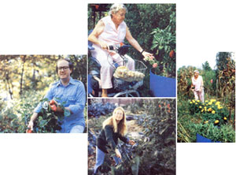 |
|
|
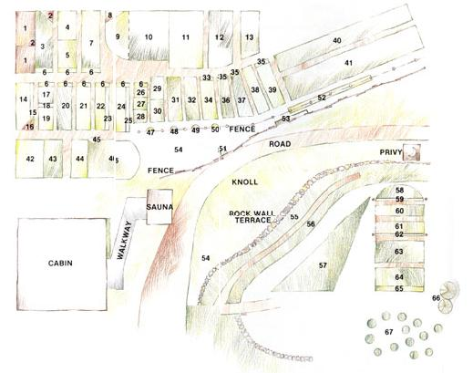 |
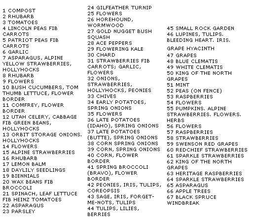 |
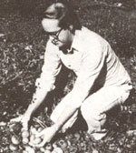 |
|
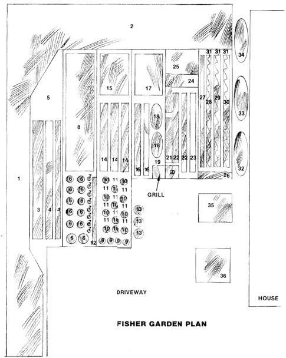 |
 |
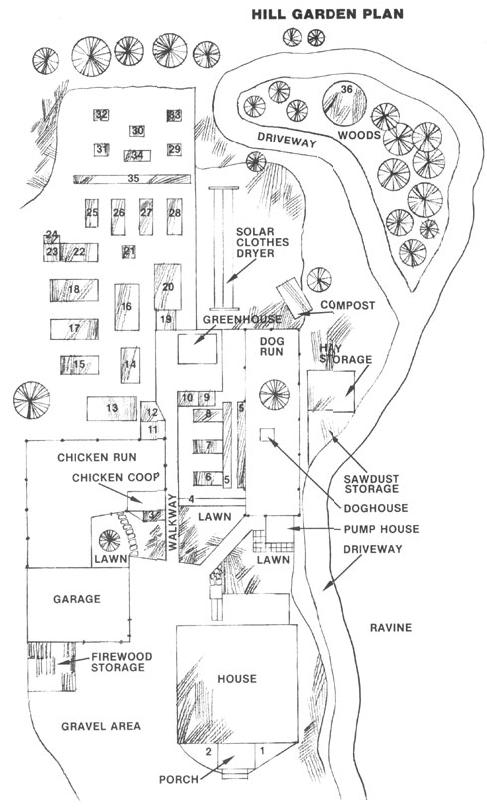 |
|
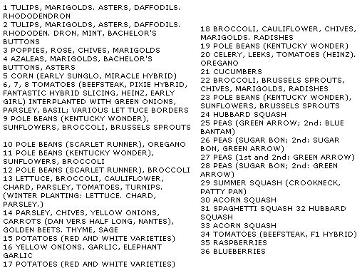 |
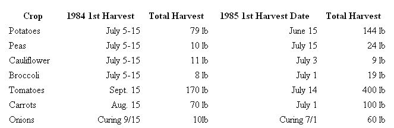 |
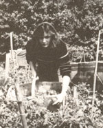 |
|
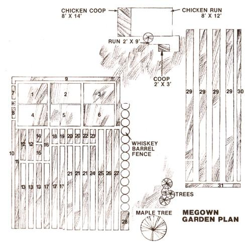 |
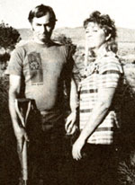 |
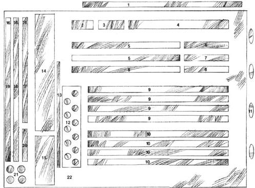 |
|
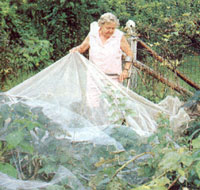 |
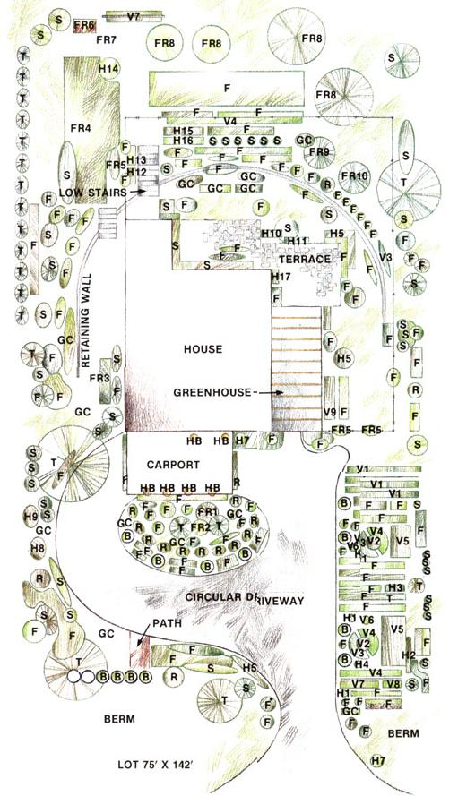 |
|